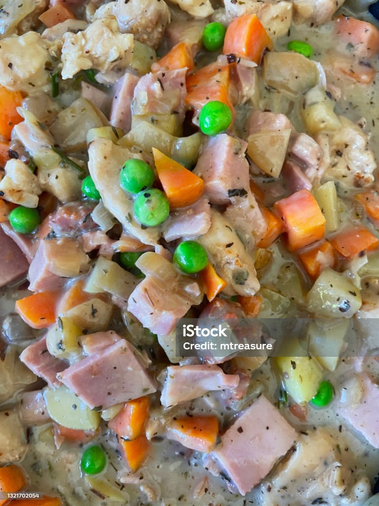

Alaking Recipe

Ingredients:
- Evaporada Milk
- Butter
- Corn
- Carrots
- Green peas
- Onions
- Garlic
- Chicken
- Salt and pepper
Cooking steps:
- Dice onions, garlic, and carrots.
- On a hot pan drop 3tbsp of butter then, sautee carrots,onions,garlic and corn.
- Add flour and slowly mix-in the Evaporada Milk. Continuously stirring
- Add pepper and salt to taste
- Serve hot with steamed rice.